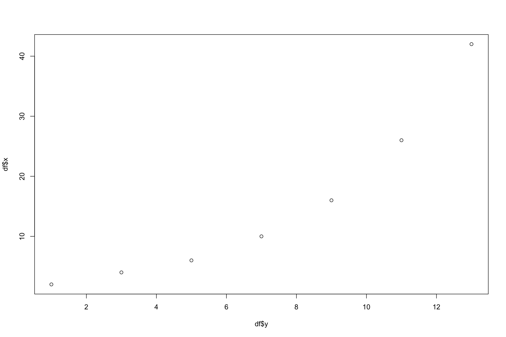
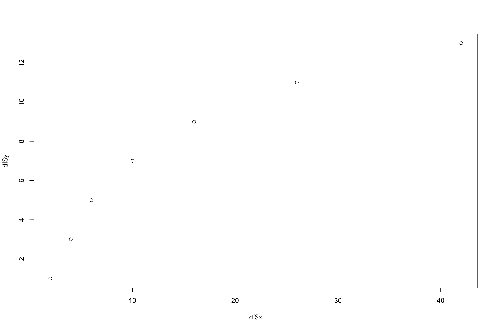
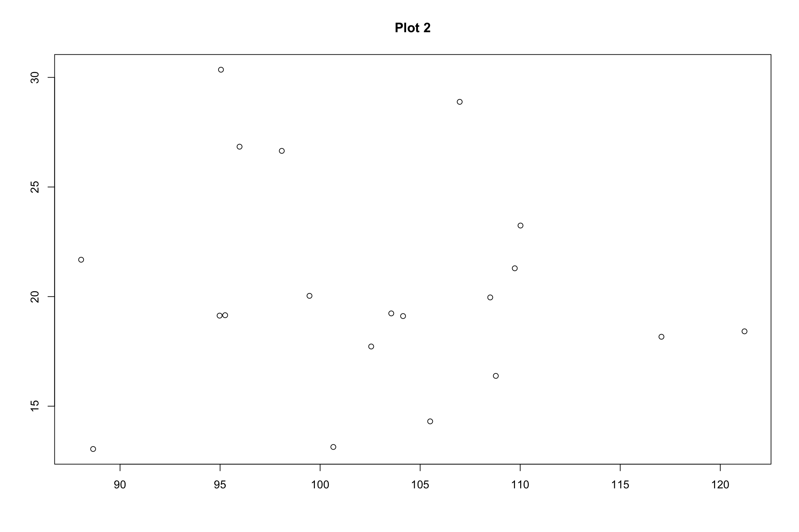

Welcome back!
How did everyone find the exercises? Were they too difficult? Were they too easy? Were there any parts that you didn’t understand? Each week when an exercise is turned in I would like to take time in the beginning of lab to make sure that everyone is on the same page. Statistics, especially when using an unfamiliar program like R, can be quite difficult. If you fall behind it is essential that you let me know so I know what things to stress.
First, let us do some review.
What would I need to type into R to have it display a histogram of the dataset: 1,2,3,4,5,6,7,8,9,10?
How could I rename the x-axis on this plot so that it carried more information than it currently does?
x = c(1,2,3,4,5,6,7,8,9,10,11)
y = c(1,4,9,16,25,36,49,64,81,100,121)
plot(y~x, main = "Years Spent in School vs. Salary", ylab = "Salary")Uh-oh! I had just finished typing in a really long function and I accidentally forgot a comma. Is there any way for me to get everything I typed back without needing to retype it?
Given the following dataset, create a plot that shows the relationship between x and y, y and x, and z and y:
x = {2,4,6,10,16,26,42} y = {1,3,5,7,9,11,13} z = {5,10,15,20,25,30,35}
x = c(2,4,6,10,16,26,42)
y = c(1,3,5,7,9,11,13)
z = c(5,10,15,20,25,30,35)
df<-data.frame(x,y,z)
plot(df$x~df$y)
plot(df$y~df$x)
plot(df$z~df$y)- Below are two plots. Of the two, which one do you thing shows a more apparent relationship or pattern?
x=c(1,2,3,4,5,6,7,8,9,10,11,12,13,14,15,16,17,18,19,20)
y=c(2,2,7,9,11,13,15,17,11,20,22,24,27,28,31,32,35,37,38,40)
plot(x~y, main = "Plot 1", ylab = " ", xlab = " ")
a=rnorm(20,20,5)
b=rnorm(20,100,10)
plot(a~b, main = "Plot 2", ylab = " ", xlab = " ")
Any questions?
New Material: Mean, Standard Deviation, Variance, Z-Score, Summation, and Stem and Leaf Plots
You will see the formula for the arithmetic mean in several different ways. Here are just a few.
\(\mu = \frac{\sum x}{n}\) or \(M = \frac{x_1 + x_2 + x_3...}{N}\)
In other words, all numbers in a set should be added together and divided by the number of items in the set.
Standard Deviation
\(\sigma = \sqrt\frac{\sum (x - \mu)^2 }{n}\)
Variance
Variance is simply \((\sigma ^2)\)
This is the formula used to find a z score.
Z is equal to the raw score \(x\) minus the mean \(\mu\), divided by the standard deviation \(\sigma\).
\(z =\frac{x-\mu}{\sigma}\)
There is no function in R to calculate a z-score, so instead we will have to use the built in functions for each part of the equation like such:
x = c(12,16,20,41)
mx = mean(x)
sdx = sd(x)
z = ((x-mx)/sdx)
z ## [1] -0.7933668 -0.4837602 -0.1741537 1.4512807x = c(12,16,20,41)
scale(x)## [,1]
## [1,] -0.7933668
## [2,] -0.4837602
## [3,] -0.1741537
## [4,] 1.4512807
## attr(,"scaled:center")
## [1] 22.25
## attr(,"scaled:scale")
## [1] 12.91962Here are a few practice problems:
- Find the mean, standard deviation, and variance for the following dataset: datset1 = {10,63,51,24,87,42}
datset1 = c(10,63,51,24,87,42)
mds = mean(datset1)
sdds=sd(datset1)
vards=(sdds^2)
vards## [1] 758.1667var(datset1)## [1] 758.1667- Find the z scores for the same dataset.
z = ((datset1-mds)/sdds)
z## [1] -1.3138394 0.6113331 0.1754450 -0.8053033 1.4831093 -0.1514711- Perform the following summations on this dataset:
x = (5,8,1,16,4,11)
\(\sum X^2\)
\(\sum (X)^2\)
x = c(5,8,1,16,4,11)
a = sum(x)^2
b = sum(x^2)
a## [1] 2025b## [1] 483Suppose that a psychologist wants to investigate the scores of his students in his statistics class. He may want to create a stem and leaf diagram in order to visualize the scores.
Here is how he might do this for the following data:
{85,90,88,95,90,91,85,94,83,86,90,90,88,94,90}
set.seed(100)
x = round(rnorm(15,89,7), digits = 0)
x## [1] 85 90 88 95 90 91 85 94 83 86 90 90 88 94 90stem(x)##
## The decimal point is 1 digit(s) to the right of the |
##
## 8 | 3
## 8 | 55688
## 9 | 00000144
## 9 | 5From this output we can infer a few things:
- Several students (9) scored somewhere in the 90’.
- No students failed
- There are two areas for scores in the 80’s and scores in the 90’s, this is because the first “leaf” represents values from 0-4 and the second “leaf” accounts for the 5-9.
Similar to histograms, ( hist(x, scale = )) we can manipulate how the stem and leaf plot is displayed using the following phrase: stem(x, scale =)
Watch what happens when we use the different scale values.
set.seed(10)
x = round(rnorm(15,20,2),digits = 0)
x## [1] 20 20 17 19 21 21 18 19 17 19 22 22 20 22 21stem(x,scale = 1)##
## The decimal point is at the |
##
## 16 | 00
## 18 | 0000
## 20 | 000000
## 22 | 000stem(x,scale = 2)##
## The decimal point is at the |
##
## 17 | 00
## 18 | 0
## 19 | 000
## 20 | 000
## 21 | 000
## 22 | 000stem(x, scale = .5)##
## The decimal point is 1 digit(s) to the right of the |
##
## 1 | 778999
## 2 | 000111222The first stem and leaf plot is the deafult you will get if you just type in stem(x). The second stem and leaf plot separates each leaf making the list twice as long. The third stem and leaf plot uses half the spacing as the first, so the scale is about half as long.